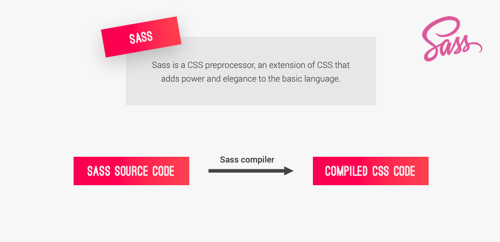
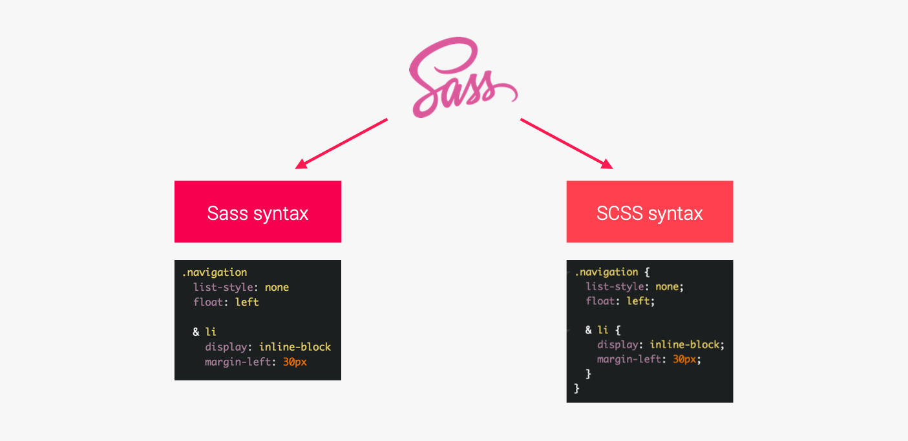
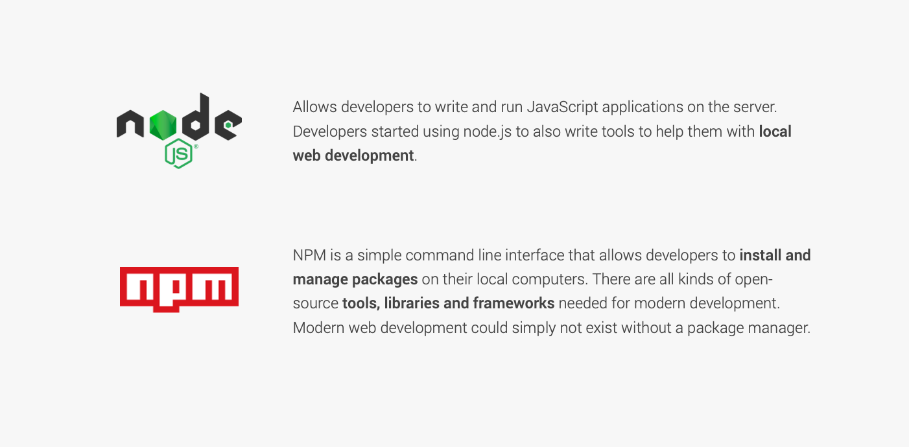

Sass (stylesheet language)
syntactically awesome style sheets

Main SASS Features
Variables:
for reusable values such as colors, font-sizes, spacing, etc;
Nesting:
to nest selectors inside of one another,allowing us to write less code;
Operators:
for mathematical operations right inside of CSS;
Partials and imports:
to write CSS in different files and importing them all into one single file;
Mixins:
to write reusable pieces of CSS code;
Functions:
similar to mixins, with the difference that they produce a value that can than be used;
Extends:
to make different selectors inherit declarations that are common to all of them;
Control directives:
for writing complex code using conditionals and loops (not covered in this course).
SASS VC SCSS

NPM & NODE

SCSS Works Steps
install node.js
create package.json command
npm init
install sass package command
npm install node-sass --save-dev
script add
"compile:sass": "node-sass sass/main.scss css/style.css -w"